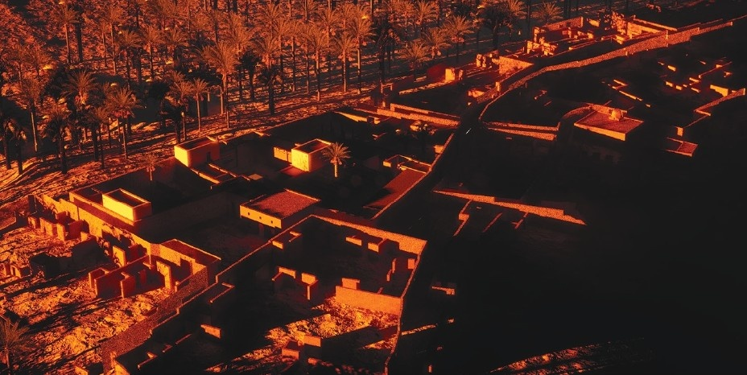

Academic · Thesis
Al-Arg
- Location
- Tunisia
- Year
- 2023–2024
- Studio
- ENAU · National Architecture Diploma
- Type
- Heritage Rehabilitation · Abandoned Village
- Surface
- Village: 1.4 ha
- Register
- 10 of 12

Degree thesis awarded Highest Honours with a unanimous jury at ENAU, Université de Carthage, 2024. The project proposes a strategy for the rehabilitation of the village of ARG, an abandoned settlement in the Tunisian interior whose population evacuated over the course of the twentieth century, leaving behind an intact but deteriorating fabric of vernacular stone architecture.
The thesis operates at three scales simultaneously: a territorial analysis of the conditions that produced the abandonment, an urban proposal for the reactivation of the village as a place of memory, culture, and temporary dwelling, and an architectural intervention on a key building within the fabric. The research draws on the theories of Carlo Scarpa, Giorgio Grassi, and the Italian school of urban morphology, and proposes a practice of rehabilitation that listens to the existing before adding anything new.
The project was founded on field surveys and heritage documentation carried out with the Société de Préservation du Village d'ARG over two years prior to the thesis, grounding the design work in direct material knowledge of the site.
Highest Honours · Unanimous Jury · ENAU, Université de Carthage · June 2024
Drawings and images

Renders, Project Atmosphere
Fig. 2
Project renders · Top: entry approach through palm threshold and ochre perimeter wall at evening light · Centre: stone and earth wall, raw materiality, rammed construction, cast shadow rhythm · Bottom: courtyard threshold, arched entry, merlonated perimeter wall, dry vegetation and ancient stone
Full size: Fig. 2, Renders, Project Atmosphere
Territory
Fig. 3
Situation map · Al-Arg within the oasis system of the Jérid · Water infrastructure, road network and inhabited fabric read as an integrated territorial system · Tamaghzah to the west · Tozeur to the east · Chott El Gharsa to the south · Oasis Chamsa at the centre
Full size: Fig. 3, Territory
Plans, Existing and Project
Fig. 4
Plans and axonometries · Top left: site plan, existing state, village fabric within oasis landscape · Top centre: ground floor, existing state, spatial organisation before intervention · Top right: exploded axonometries, three levels of reading, roof terrace, inhabited level, and courtyard system · Bottom left: site plan, rehabilitation proposal, new public spaces and programme within existing grain · Bottom centre: ground floor project, thresholds, courtyards and covered passages restructured · Bottom: longitudinal section A-A, sequential spatial reading from entry through courts to inhabited core
Full size: Fig. 4, Plans, Existing and Project
Section and Structural Systems
Fig. 5
Structural systems and exploded axonometries · Left column: three levels of vertical reading, accessible roof terrace, inhabited level, articulation of open courtyards within the earthen constructive system · Right column, Structure 01: timber framing, palm post-and-rafter system, accessible roof terrace above inhabited level · Structure 02: claustra and solar shading, lightweight filtering screen adapted to arid climate · Structure 03: ventilation void, natural thermal chimney integrated into earth masonry
Full size: Fig. 5, Section and Structural Systems